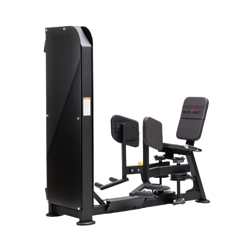
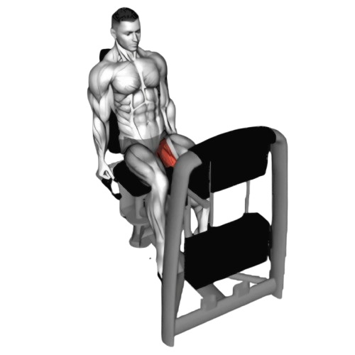
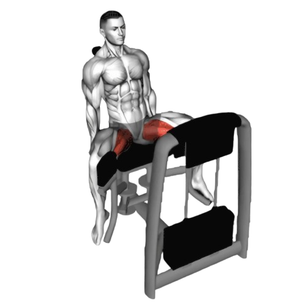

어덕션

- 두 다리를 벌린 상태에서 시작한다.
- 양쪽 다리를 모아 서로 가까이 대도록 한다.
- 다리를 모은 상태에서 1초 정도 정지합니다.
- 이때 호흡은 뱉는다.
- 천천히 시작 위치로 돌아간다. 이때 근육의 긴장을 유지해야 한다.
- 이때 호흡은 마신다.

주의사항
- 허리를 과도하게 구부리거나, 상체를 앞으로 숙이지 않도록 주의한다. 항상 등을 곧게 유지하고, 중심을 잘 잡아야 한다.
- 무릎이나 엉덩이를 과도하게 움직이지 않도록 주의한다. 운동 범위를 지나치게 넓게 설정하면 관절에 무리가 갈 수 있다.
- 무리하면 부상위험이 있기 때문제 처음에는 가벼운 중량부터 시작한다.
- 부상을 방지하기 위해 항상 준비 운동과 스트레칭을 한다.
운동부위 및 효과
- 내전근, 대퇴사두근, 대둔근
- 내전근을 자극함으로써 허벅지 안쪽을 탄탄하게 만든다.
- 매끈한 다리 라인을 형성시켜준다. 특히 다리 사이의 간격을 줄이는 데 효과적이다.